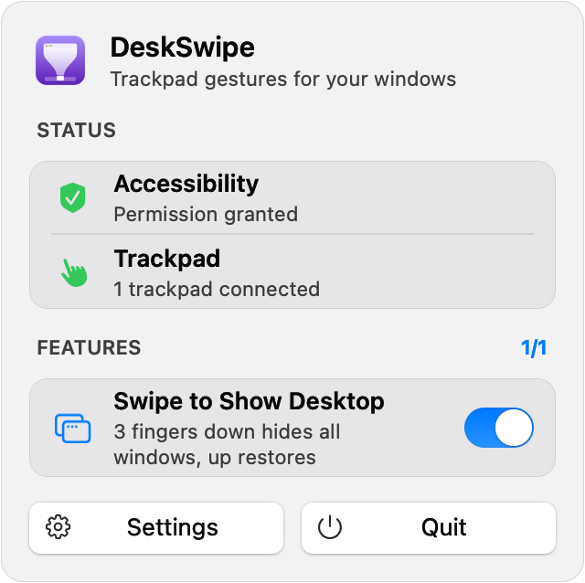

DeskSwipe
Windows-style "show desktop" for the Mac. Three fingers down: every window minimizes. Three fingers up: exactly those windows come back, in order. Windows you minimized yourself stay put.
It remembers only what the last swipe hid, and forgets any window you bring back from the Dock, close, or quit.
Swift · AppKit · SwiftUI · Accessibility API · MultitouchSupport · Swift Testing

3 fingers ↓ ↑